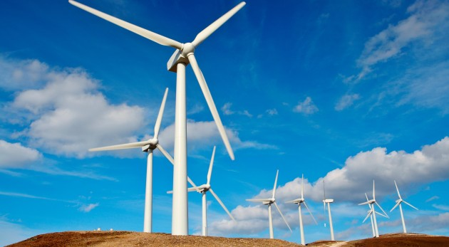
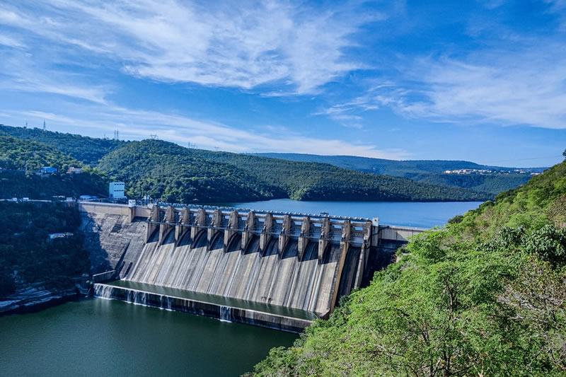
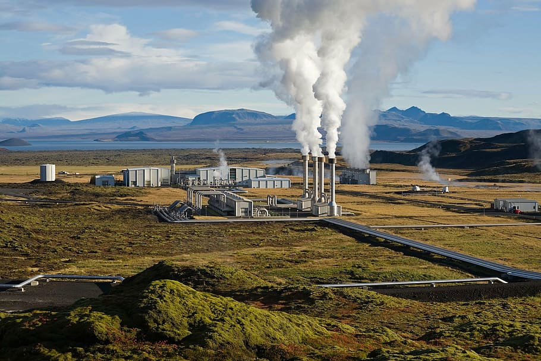
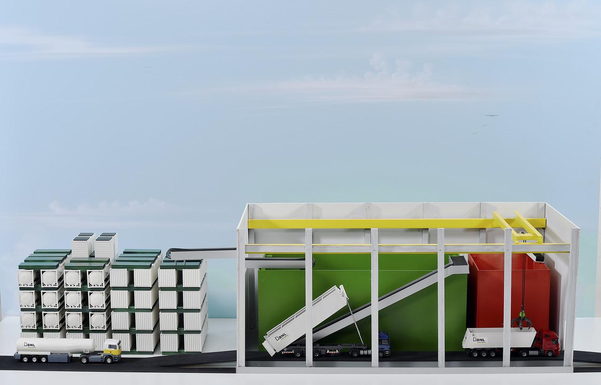
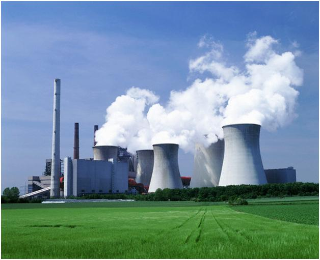

Conforme a civilização vem progredindo é crucial que se busquem novas formas de energias para suprir o desenvolvimento humano. Entretanto grande parte das energias utilizadas atualmente no mundo são energias poluentes e não renováveis o que torna as energias sustentáveis como uma solução, visto que a longo prazo estas energias podem suprir uma demanda de energia muito mais confiável por não emitir gases poluentes e serem renováveis e não se esgotaram como os combustíveis fósseis .
Diferenciação entre energia sustentável e energia limpa
Existe uma pequena diferença na qual as pessoas costumam se confundir ao dizer que uma energia é limpa ou sustentável, pois pela própria definição de sustentável é aquilo que pode ser reposto com certa facilidade o que não necessariamente significa que tal energia não emita gases de efeito estufa na atmosfera. Tendo isso mente este site tem alguns dos vários tipos de energias, dos quais alguns deles são apenas sustentáveis e outros tanto sustentáveis como não poluentes.
Tipos de Energia:
Energia Solar
Quando se trata sobre a geração de energia através da irradiação do sol existem duas formas de se aproveitar para geração de energia, a Heliotérmico e a fotovoltaica. Energia Heliotérmica é uma das tecnologias mais eficientes utilizando o sol pois este se baseia numa configuração de espelhos apontados para uma só direção na qual aqueceram água de uma torre para que o vapor desta possa gerar energia. Energia solar fotovoltaica nada mais é do que a conversão direta da radiação solar em energia elétrica. Essa conversão é realizada pelas chamadas células fotovoltaicas, compostas por material semicondutor, normalmente o silício. Ao incidir sobre as células, a luz solar provoca a movimentação dos elétrons do material condutor, transportando-os pelo material até serem captados por um campo elétrico (formado por uma diferença de potencial existente entre os semicondutores). Dessa forma, gera-se eletricidade.

Eólica
A energia eólica é uma energia na qual sua funcionalidade depende do movimento dos ventos para movimentar hélices que movimentam um gerador elétrico, entretanto essa energia não é barata e onde é instalada ocorre um aumento de temperatura pois desvia correntes de ar e contribui para aumento de morte de pássaros.
Hidrelétrica
A energia Hidrelétrica é gerada pelo potencial hídrico onde se cria barragens em rios para que a água fique acumulada, assim nestas barragens há comportas na quais contem enormes geradores elétricos que com a passagem da água são movimentados e geram energia elétrica. Essa é a energia mais utilizada no Brasil pela grande disponibilidade de recursos hídricos, no Brasil, atualmente, tem 83% de sua matriz elétrica originada de fontes renováveis, de acordo com o secretário de Planejamento e Desenvolvimento Energético do Ministério de Minas e Energia, Reive Barros. A participação é liderada pela hidrelétrica (63,8%).
Geotérmica
A energia geotérmica opera a partir da passagem de um fluido por meio da zona quente que, assim, é aquecido para convertê-lo em vapor. Desta forma, o vapor, que possui uma energia interna elevada, é utilizado através de uma turbina para convertê-lo de energia mecânica para energia elétrica.
Biomassa
Sobre energias renováveis é importante citar que a gerada por Bicombustíveis é baseada no processo de queima do combustível para a geração de energia o que pode ser considerado um ponto negativo. Entretanto essa energia é muito menos poluente e se utiliza de matéria orgânica que seria descartada como a poupa da cana de açúcar, com a diminuição de energias a carbono os bicombustíveis vem ganhando espaço e De acordo com o Balanço Energético Nacional 2019, o País tem uma oferta de energia de 289 milhões de toneladas equivalentes de petróleo -- tep, medida que equivale a 7 barris de petróleo, distribuídas em 45,25% de ofertas de renováveis e os 54,8% em não renováveis. Entre as renováveis, a biomassa corresponde a 17,5% da oferta disponível.
Nuclear
A energia Nuclear por sua vez não emite gases poluentes na atmosfera e é capaz de produzir grandes quantidades de energia, porem como se utiliza de Urânio radioativo para geração de energia é uma energia que necessita de uma alta qualidade de segurança e vistoria para evitar acidentes nucleares.
Maremotriz
Sua geração se dá por meio da construção de barragens ou da instalação de turbinas submersas. As hélices das turbinas captam a movimentação da água, e o gerador presente na estrutura converte a energia cinética em elétrica. O único problema dessa energia é a não Constancia na geração pois as ondas não possuem ciclos constantes.